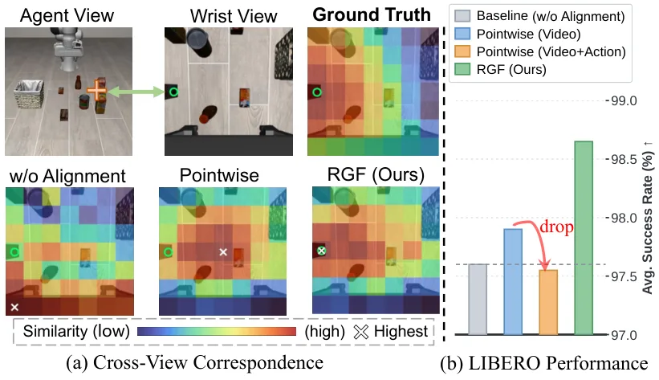
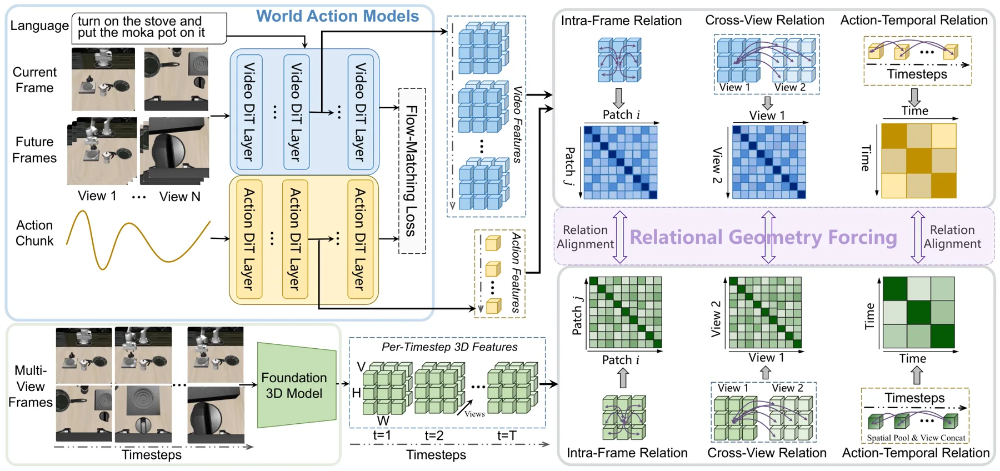
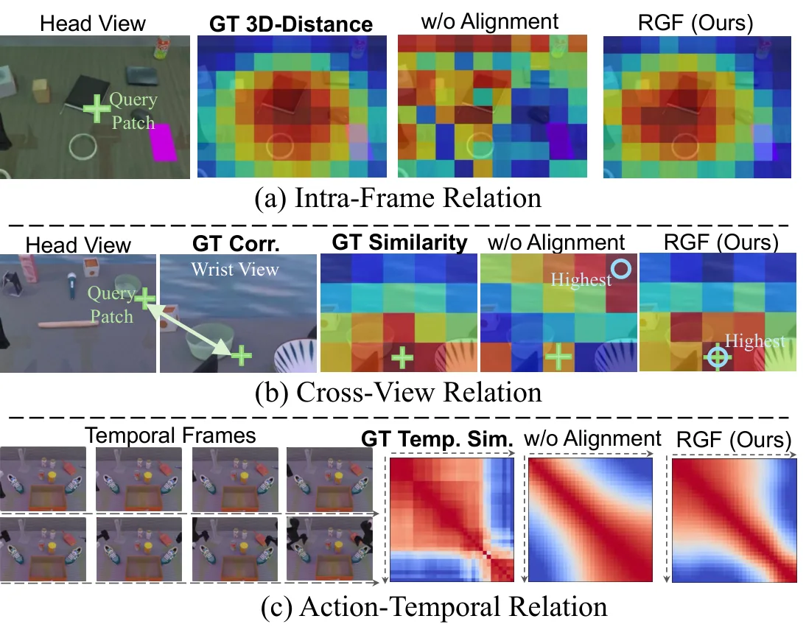
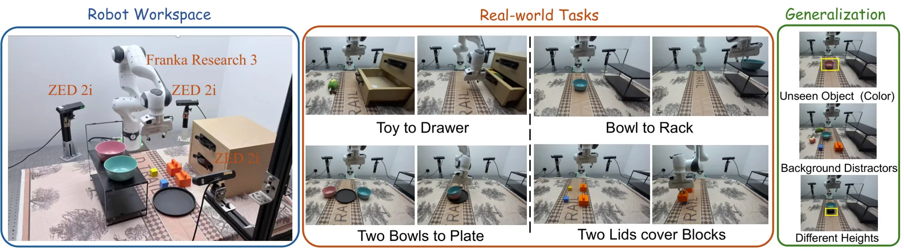
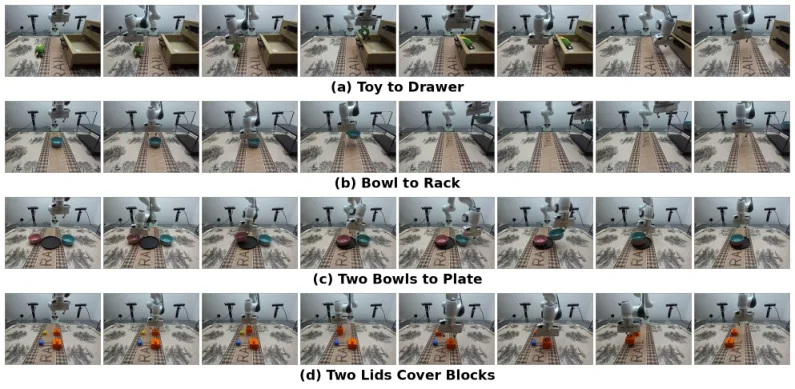

Relational Geometry Forcing：点级几何对齐会伤动作学习，那就改成对齐“关系”
Relational Geometry Forcing for World Action Models
作者的观察很具体：把 VGGT 稠密特征点级回归到动作专家，会让三个 WAM 变体的成功率都跌破无对齐基线（97.90→97.55、98.75→98.35、98.40→97.95）。于是改成只对齐余弦相似度矩阵：帧内、跨视角、动作-时间三个关系项，用 Huber 损失匹配冻结 VGGT 诱导的关系。LIBERO 平均 98.65（Fast-WAM 97.60），RoboTwin 平均 92.71，真机 Franka 平均 65.71%（Fast-WAM 57.14%）；推理路径完全不变。
作者、单位与技术谱系 · Research context
作者与单位
研究脉络
- REPA（Yu et al., 2024）方法基座关系：确立了“用冻结视觉基础模型对齐扩散中间特征”的范式；本文保留对齐思路，但把对齐对象从点级特征换成关系矩阵。[REPA 论文]
- VGGT（Wang et al., CVPR 2025）几何教师关系：一次前向给出相机、深度与点图；本文只取末层 patch 特征作为关系目标，并把它们离线缓存，不让教师参与推理。[VGGT 论文]
- Spatial Forcing（Li et al., 2025）直接对照的上游方法关系：把 VGGT 点级对齐用于 VLA；本文用它作为“点级路线”的参照，并在动作专家上复现其失效（97.90→97.55）。[Spatial Forcing 论文]
- VideoREPA（Zhang et al., NeurIPS 2025）关系对齐的前作关系：把成对关系对齐用于文本到视频生成，迁移物理先验；本文把关系对齐从单流生成器扩展到“视频+动作”双专家，并加入动作-时间关系项。[论文 §2]
合作网络
- CASIA ↔ UCAS中科院自动化所 → 中国科学院大学关系：多作者双署名[arXiv v1 TeX 作者块]
- Jianlou Si / Jun Huang阿里巴巴集团 → CASIA／UCAS 作者群关系：共同署名[arXiv v1 TeX 作者块]
- Jing Liu / Nianfeng Liu / Yan HuangFiveAges → CASIA／UCAS关系：三单位联合署名[arXiv v1 TeX 作者块]
- RGF-WAM 基线依赖Fast-WAM（Yuan et al., 2026） → RGF-WAM关系：代码与配方依赖[Fast-WAM 论文]
作者顺序、单位编号与通讯邮箱取自 arXiv v1 TeX 作者块，属论文事实；论文未提供代码仓库链接，也未标注“通讯作者”字样，因此这里只写第一作者与末位作者，不推断通讯身份。单位之间的关系仅记录共同署名与明确的配方依赖，不推断导师或师生关系。
方法本质拆解 · What actually changed
是不是微调？
是从 Fast-WAM 的配方出发继续训练，不是纯测试时方法。视频专家与动作专家都从 Wan2.2-TI2V-5B 初始化（动作专家由视频 DiT 权重线性插值到更小隐维），两个投影头是新加的、随训练更新；VGGT 完全冻结且特征离线缓存，不参与反向传播。训练规模：LIBERO 10 个 epoch、RoboTwin 5 个 epoch，AdamW、学习率 1e-4、per-device batch 16、bf16。
有没有额外约束？
输入侧不加任何东西：仍然只有多视角 RGB 与语言，不需要深度、点云或相机参数；VGGT 输出只作训练目标，从不作为输入。约束是三个关系损失：帧内 patch 关系、跨视角关系、动作-时间关系，全部对行归一化余弦矩阵做 Huber 匹配；总权重 λ_RGF=0.5、三项等权，作用在第 15 层的中间特征上。这三个约束改变的是特征的相对几何结构，而不是特征本身的数值，因此不会强迫动作 token 去拟合稠密几何。
推理/后端到底做了什么？
推理路径与 Fast-WAM 完全一致：投影头、VGGT 特征、关系计算全部移除，只保留原有的视频-动作双专家去噪流程，10 步去噪、CFG=1.0。没有几何分支、没有额外输入、没有测试时优化，也没有缓存需要维护。这意味着它可以直接套在已有 WAM 上做训练期正则，而不改变部署契约。
方法本质是什么？
本质是把几何监督从“值”换成“结构”：不要求 WAM 特征等于某个几何特征，只要求特征之间的相似度关系与教师诱导的关系一致。这样既绕开了维度不匹配，也避免了稠密目标把紧凑动作特征拉散；跨视角关系负责注入多视角对应，动作-时间关系负责把动作节奏对齐到场景演化节奏。它改变的是中间特征的几何组织方式，从而在推理零开销的前提下提升操作成功率。
输入多视角 RGB 与语言；训练期把第 15 层视频/动作特征投影后，用冻结 VGGT 诱导的帧内、跨视角、动作-时间三组关系矩阵做 Huber 对齐；推理期移除全部辅助模块，保持原 WAM 路径，从而以零额外输入获得几何正则。

结论与问题Conclusion & Motivation
核心结论
论文的主张是：几何先验不该以“稠密特征回归”的形式进入 WAM，因为视频 token 描述局部图像区域、动作 token 描述控制转移，两者本就不该共享同一嵌入空间；改成匹配“成对关系”（余弦相似度矩阵）后，既不需要两者维度一致，也不会把动作特征挤向场景细节。证据是三层递进的：点级对齐加到动作专家会掉到基线以下；关系对齐在三种 WAM 变体上都为正；真机上平均 65.71% 对 Fast-WAM 57.14%，且高度变化设置提升最大（75 对 55）。
动机与问题
WAM 由视频专家与动作专家组成，靠未来帧预测与动作流匹配联合训练，但场景几何没有任何直接监督，精密操作时缺少物理约束。已有的两条补救路线——加深度/4D 预测分支、或用 3D 基础模型做表征对齐——都默认“特征可以逐点对应”，而 REPA 式点级对齐在视频侧有效，是因为视频特征与几何目标都描述局部区域。作者的关键反例是：把同样的点级对齐延伸到动作专家，三个 WAM 变体的成功率全部跌破无对齐基线，说明问题不在监督信号强弱，而在“表示角色错配”。
方法Method
方法总览
在一个通用双专家 WAM（Wan2.2-TI2V-5B 视频专家 + 1B Action DiT）上，取第 15 层的视频与动作隐状态，分别经两层 MLP 投影头映射到 2048 维；冻结 VGGT-1B 的末层特征在训练前离线缓存，视频侧按 VAE 潜变量对应帧取特征并把 patch 网格双线性重采样到 WAM 网格，动作侧按时间步把每个视角池化后拼接成场景向量。然后构造三个关系项：帧内（同一视角内 patch 间的相似度结构）、跨视角（同一时刻两个视角之间的相似度结构）、动作-时间（动作 token 序列的相似度结构对场景演化的相似度结构），全部用行归一化余弦相似度矩阵加 Huber 损失匹配，推理时投影头与关系计算整体移除。
关键技术细节
关系算子定义为 R(X)=X̄X̄ᵀ 与 R(X,Y)=X̄Ȳᵀ，X̄ 为逐行 L2 归一化；自关系矩阵去掉对角线，同时剔除 padding token 对应的行列。这个设计的关键好处是：关系矩阵的形状只取决于 token 数，与 WAM 特征维度、VGGT 特征维度都无关，因此 3072 维视频特征与 1024 维动作特征可以共用同一套监督。总损失是视频流匹配 + 动作流匹配 + λ_RGF 倍关系损失，三项等权、λ_RGF=0.5；训练时 VGGT 特征全部预计算缓存，只有 WAM 与两个投影头接收梯度，无 warm-up 阶段。论文还比较了 KL 与 Huber 两种关系距离：KL 把关系分数归一化成分布、丢掉绝对尺度，Huber 保留幅值并对大残差线性惩罚，后者 98.65% 对前者 98.05%。

实验Experiments
实验设置
仿真用 LIBERO（四套件 ×10 任务 ×500 条演示，每套件 500 次 rollout，共 2000 次）与 RoboTwin 2.0（50 个双臂任务，Clean 50 条 / Randomized 500 条演示，每设置 100 次 rollout）。动作视界 H=32、每训练块 9 帧视频、推理 10 步去噪、CFG=1.0；用 8 张 H20 训 LIBERO 约 16 小时，32 张 H20 训 RoboTwin 约 65 小时。真机是 Franka Research 3 加三台 ZED 2i，四个基础任务各 50 条演示、每设置 20 次 rollout，另设三个 Bowl-to-Rack 泛化变体（未见颜色、背景干扰物、改变放置高度）。对照覆盖 VLA（OpenVLA-OFT、π0.5、Spatial Forcing）、WAM（LingBot-VA、Motus、Fast-WAM）与几何感知 WAM（X-WAM、GeoSem-WAM、WAM4D、MECo-WAM）。
实验数字与比较
LIBERO 平均 98.65%（Spatial 99.4 / Object 100.0 / Goal 98.6 / Long 96.6），Fast-WAM 为 97.60%，GeoSem-WAM 98.55%，Spatial Forcing 98.50%，LingBot-VA 98.50%；相对 Fast-WAM 的套件增益为 Spatial +1.2、Goal +1.6、Long +1.4。RoboTwin 2.0 为 Clean 92.92% / Randomized 92.50%（平均 92.71%），高于 MECo-WAM 的 92.62%、GeoSem-WAM 的 92.54% 与 Fast-WAM 的 91.83%，且是表中唯一没有具身策略预训练（P.T. 为 ×）却拿到最高平均分的条目。真机平均 65.71% 对 Fast-WAM 57.14%、π0.5 54.29%；逐项看 Two Lids cover Blocks 55 对 40（+15）、Two Bowls to Plate 70 对 60（+10），泛化设置里未见颜色 70 对 65、干扰物 45 对 40、高度变化 75 对 55（+20）。
消融/失败边界
三个关系项单独使用都接近基线（帧内 97.65、跨视角 97.70、动作-时间 97.45），两两组合里含跨视角的两组为正（帧内+跨视角 97.90、跨视角+时间 98.00），帧内+时间为负（97.35），三项齐全才到 98.65，说明增益是非加性的、跨视角对应是稳定器。对齐层：L8 97.95、L15 98.65、L22 98.20；损失权重：0（关闭）97.60、0.25 98.40、0.5 98.65、1.0 97.55——权重过大反而伤 Long（94.2）。最关键的失败边界是点级对齐：VGGT 点级只对齐视频 97.90，再对齐动作降到 97.55，比无对齐基线还低；而纯 DINOv2 关系对齐就有 98.35%，说明“对齐形式”比“特征来源”更重要。
局限与迁移Limitations & Transfer
局限与待核验
作者在结论中明确承认两点：当前只用成对余弦关系，没有建模显式度量尺度与接触结构；未来才考虑更长时程的动态。我们的待核验项：(a) 论文正文与 TeX 源都没有代码链接，复现需等释放，尤其是“VGGT 特征离线缓存 + 双线性重采样”的实现细节；(b) RoboTwin 上相对 MECo-WAM 只有 0.09 个点的平均优势、LIBERO 上相对 GeoSem-WAM 只有 0.10，是否超出随机波动需要多种子；(c) 真机每设置 20 次 rollout，单次成功率为 5% 粒度，泛化设置里的 +20 只有 4 次 rollout 的差别；(d) 计算预算高（32×H20×65h）但未报告推理时延，对实时部署的影响未知。
与你研究路线的关系
这篇最值得抄的不是具体损失，而是“先证明点级对齐会伤下游，再换成关系对齐”的实验设计：它把“监督信号与表示角色是否匹配”变成可测命题，这种对照可以直接用于你的融合网络——例如把激光/视觉特征对齐到同一个几何教师时，先测点级回归对下游位姿的影响，再决定是否改用关系约束。关系矩阵与维度无关这一点对多传感器尤其有用：不同模态的特征维度天然不同，关系对齐不需要额外的投影对齐层。下一步建议做最小实验：在现有 VIO 的视觉分支上加一个跨视角关系损失（用离线 VGGT 特征作教师），只训一个小投影头，比较它与点级回归在退化场景下的位姿误差。







